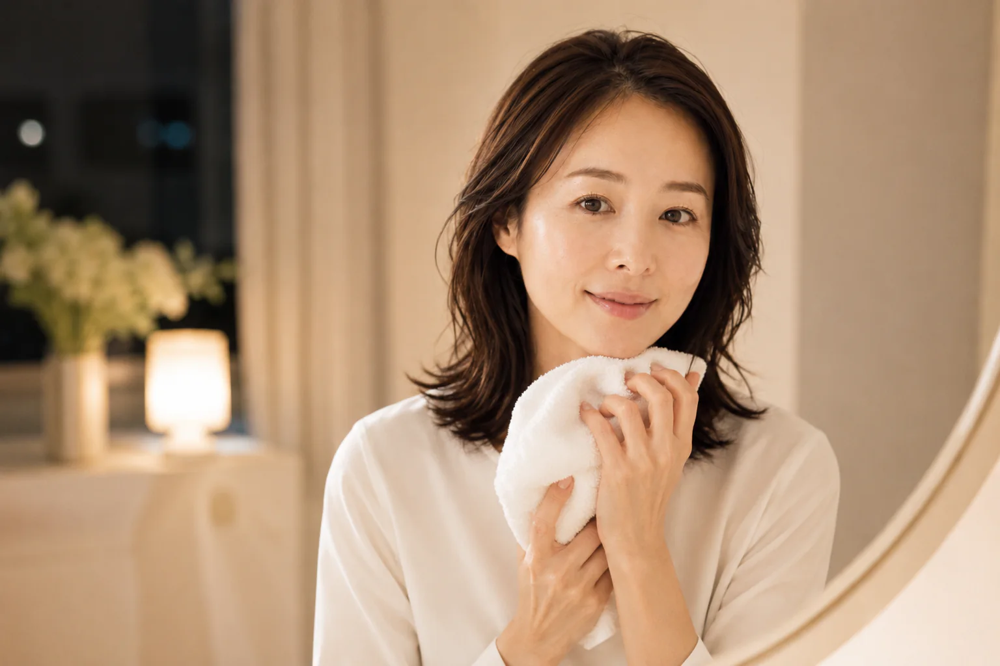

メイクに合わせる
しっかりメイクか軽いメイクかで、必要な洗浄設計を分けます。
PORE CLEANSING EDIT
メイクの濃さ、洗い上がり、W洗顔の要否から選びやすく整理。毛穴汚れを落とす目的でも、こすりすぎない使い方を優先します。

HOW TO CHOOSE
落とす強さだけでなく、メイクの濃さと洗い上がりから選びます。
しっかりメイクか軽いメイクかで、必要な洗浄設計を分けます。
つっぱり感が気になるなら、摩擦を避けた使い方も確認します。
W洗顔、濡れた手、まつエク対応など日常の条件を比較します。

SKIN CONCERN
鏡に近づくと見える鼻まわりや頬のざらつき。洗浄力だけを上げるのではなく、メイクの濃さと肌状態に合う落とし方を選ぶことが大切です。
今の肌を知ることが、選び方の第一歩です。
AFTER THE EDIT
摩擦を抑えながら、その日のメイクをきちんとオフ。洗い上がりの心地よさまで比較して、毎日続けやすい1本を選びます。
落としすぎない。それでも、すっきり。QUICK COMPARISON
| 商品 | 容量 | 参考価格 | タイプ | 選び方 |
|---|---|---|---|---|
| アテニア スキンクリア クレンズ オイル スムースブラック | 175mL | 2,200円 | オイル | W洗顔不要で時短したい |
| FANCL マイルドクレンジング オイル ブラック＆スムース | 120mL | 2,090円〜 | オイル | 濡れた手でも使いたい |
| DUO ザ クレンジングバーム ブラックリペア | 90g | 販売ページで確認 | バーム | バームの厚みでなじませたい |
| オルビス ザ クレンジング オイル | 120mL | 1,980円〜 | オイル | 無香料で選びたい |
| BANILA CO クリーンイットゼロ クラリファイング | 125mL | 販売ページで確認 | バーム | 韓国コスメのバームを試したい |
PRODUCT NOTES
数量限定品。微細クレイを配合した黒いクレンジングオイル。香りや在庫は購入画面で確認してください。
ブラック＆スムースタイプ。角栓・皮脂汚れを落としたい人向けの設計です。
炭・クレイを配合したバームタイプ。付属スパチュラで乾いた手に取り、やさしくなじませます。
濡れた手でも使用可能。使用後は洗顔料を使う案内です。
クラリファイングを含む4タイプから選択できる販売ページ。選択内容を確認して購入してください。